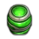
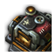

A 3D Terran control study.12 SCVs. 50 minerals. Build your opening.
Click / drag to select · Right-click to commandShift queues orders · F12 opens the controls
This study implements a Terran subset. Dimmed, unsupported units identify their limitation in the tooltip. World models and movement solver are custom; this is not the commercial SC2 engine.
Blizzard control reference ↗